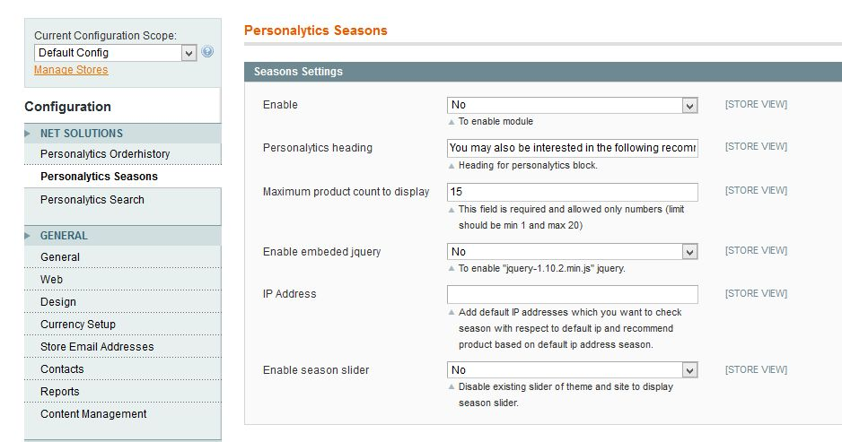
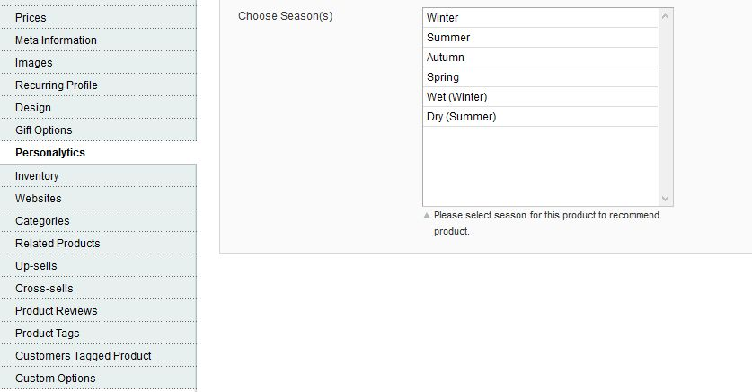
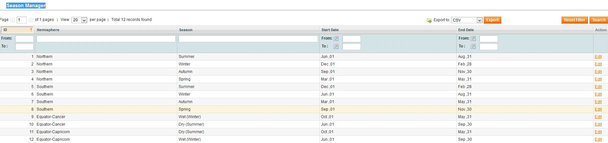
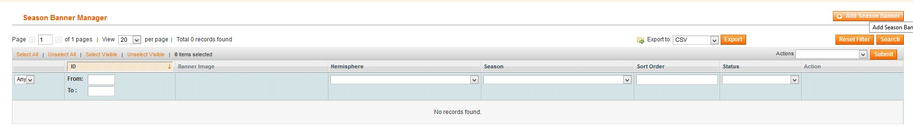

Product Recommendation based on Seasons
Table of Contents
Description
Version 1.0.0
The present day eCommerce customers are highly accustomed to features like product recommendations and personalization.
A website that hosts features that help them save their browsing efforts and time are the most desirable.
While most of the retailers are leveraging big data to enhance the precision in personalized recommendations, it is time they classify the recommendations on the basis of the product category and apply all the intelligence in understanding the customer's consumption cycles.
Personalytics is one such Magento plugin/extension that not only entails order history, but also considers local season or weather (at customer's location) and the shelf-life of the product while framing the recommendations. This Extension also includes the feature of email Segmentation.
Features
- Product recommendation on the basis of season as per the location of customer
- Banners on home page on the basis of season as per the location of customer
- Flexibility to admin for settings of all the above features
Installation
Backup your data
Backup the database and your store's web directory.
Disable Compilation
This step is for Magento 1.4+ versions. If you are running an older version, this step can be skipped. In the Magento admin panel, go to System->Tools->Compilation. In case "Compiler Status" is "Enabled", click on the "Disable" button (in case the status is disabled you can skip this step):
Download and Extract
Download and extract (unzip) the extension's contents on you computer. Navigate inside the extracted folder.
Upload files
Using a FTP client, upload the content of the extension directory to the store's document root, so that the app directory in the extension folder overwrites the app directory on the server. If asked to replace any files, select "Yes".
Clear the cache
In the Magento admin panel, go to System->Cache Management and press the "Flush Magento Cache" button:
Configuration
After the extension is installed, you can visit System->Configuration->Net Solutions->Personalytics Seasons Settings in the Magento admin panel to see the main configuration options:

Enable:
Admin option to enable or disable the extension. If you don't want to show recommendation block on any page then save this option as "No".
Personalytics heading:
Heading you want to show above the recommendation block
Maximum product count to display:
Maximum number of products you want to display on frontend in recommendation block, if it is more than 4 then carousel will appear
Enable embeded jquery
If Jquery is already added on your wesbite then set this option as "No"
Enable season slider
You want to show banners on homepage as per the seasons.
Catalog Settings
Setting expiration date product wise
Visit Catalog->Manage Products->Personalytics in the Magento admin panel to see how you can assign seasons to different products. You can assign multiple seasons to products

Seasons
Setting seasons date
Visit Personalytics->Season Manager in the Magento admin panel to see how you can set the different dates for seasons as per the location on earth.We have already set the date for different seasons as per the calender

Visit Personalytics->Season Banner Manager in the Magento admin panel to see how you can add different banners as per different seasons

Troubleshooting
When I try to access your extension's configuration at System->Configuration->Personalytics Settings, I get a 404 error
Logout & Login back into the Magento admin panel.